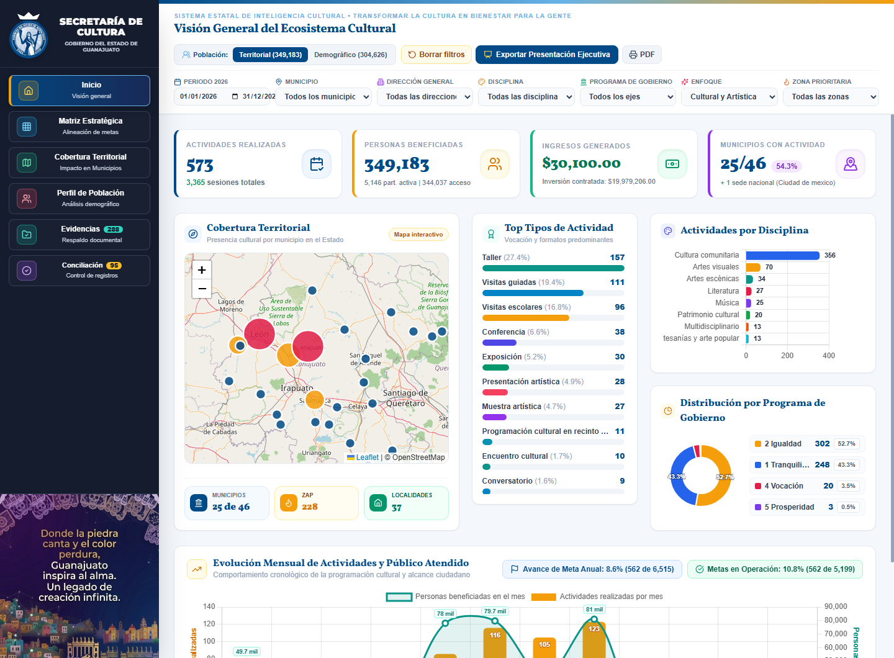
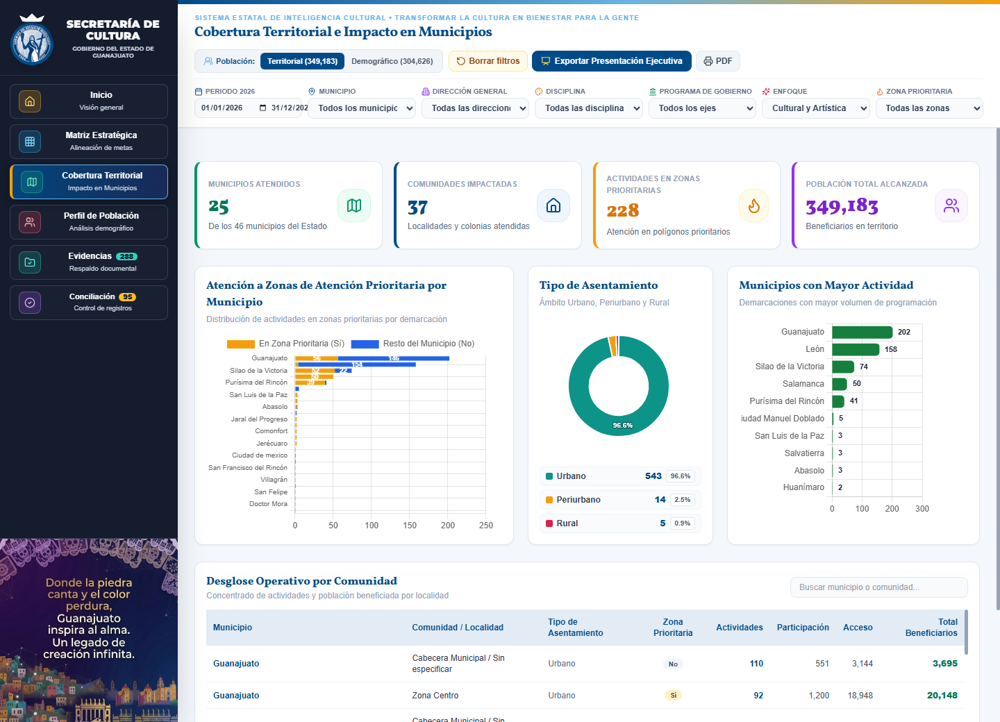

1. Diagnóstico del estado de los datos
El análisis de la matriz de información institucional confirma que la Secretaría de Cultura posee una amplia capacidad operativa y de generación de datos en territorio. Sin embargo, previo a la sistematización instrumentada con la Dirección de Planeación, este activo estratégico se encontraba atomizado y desestructurado. Para consolidar la operación del Tablero de Control y dar seguimiento riguroso a las 99 metas anuales y los 34 procesos presupuestales, resulta imperativo transitar de un modelo de "Información Estática" (almacenada en documentos aislados) a un ecosistema de "Datos Estructurados Transaccionales".
Tres nudos críticos transversales
-
1. Incompatibilidad de formatos (datos estáticos no procesables): Un alto porcentaje de las fuentes primarias históricas se reportaba en procesadores de texto (Word .docx), presentaciones visuales de cartelera (PowerPoint .pptx) o imágenes digitalizadas (.pdf escaneado con firmas y sellos).
- Impacto técnico: Los motores de inteligencia de datos no pueden realizar lecturas matemáticas automatizadas sobre descripciones narrativas en prosa ni extraer sumatorias financieras desde fotografías o PDFs escaneados, impidiendo la ingesta directa hacia el sistema.
-
2. Vulnerabilidad en los procesos de consolidación manual: Se identificó una dependencia sistemática de la captura y transcripción manual (copiado y pegado de hasta 46 archivos Excel municipales y múltiples hojas por recinto) para alimentar matrices concentradoras.
- Impacto técnico: La transcripción humana eleva exponencialmente el riesgo de error (alteración accidental de fórmulas #REF! / #DIV/0!, variaciones ortográficas en nombres de municipios y recintos), introduce rezagos de semanas en la actualización del tablero y dificulta la detección de registros duplicados.
-
3. Brecha física de conectividad e infraestructura en sitio: Existen limitaciones operativas severas en puntos de captura en campo, específicamente en los Centros de Atención a Visitantes (CAV) y zonas arqueológicas de la Dirección General de Patrimonio Cultural (carencia de internet y suministro eléctrico), así como déficit de equipos de cómputo en sedes de Formación e Investigación.
- Impacto técnico: Obliga a mantener flujos primarios en papel y lápiz que requieren protocolos formales de captura diferida homologada (Offline) para evitar que el dato se pierda o se distorsione al transcribirse en oficinas centrales.
2. Análisis de viabilidad por indicador
- Indicador de mayor viabilidad e implementación inmediata — Indicador 11 (Tasa de variación de oferta cultural realizada en los municipios): Cuenta con la mayor cobertura transversal al ser alimentado por múltiples direcciones (Desarrollo Cultural Municipal, Museos, Forum Cultural, Producción Artística). Mediante su vinculación con el catálogo de los 46 municipios (GTO_COORDS) y las 99 metas de Cat_Alineacion, se consulta actualmente en los Módulos 1, 2 y 3 del Tablero Directivo.
- Indicadores de alta complejidad demográfica — Indicadores 1 y 13 (Grupos Prioritarios, Polígonos ZAP y Jóvenes): Exigen alta precisión en la desagregación por sexo, edad, comunidad ZAP y distinción entre asistencias recurrentes y personas únicas beneficiadas. Se resuelven mediante la separación estructural entre Total_Sesiones y padrón de participantes (Cantidad_Participacion), el catálogo depurado Cat_Comunidades_Limpio (239 localidades con marcaje ZAP) y la categoría controlada "Dato global" cuando en taquilla física sólo sea viable el conteo general.
- Indicadores con riesgo de estructura cualitativa — Indicadores 8 y 9 (Nuevas producciones y Circulación de proyectos fuera del territorio estatal): Su información residía en fichas informativas de Word, diapositivas PowerPoint o catálogos editoriales en PDF. Se estandarizan al asignar un folio relacional único (ID_Actividad) a cada nueva producción y al habilitar el registro de sedes foráneas nacionales (ej. Ciudad de México) separadas estadísticamente de los 46 municipios mediante la función isMunicipioGTO().
3. Identificación de barreras estructurales
El diagnóstico identifica cuatro barreras que condicionan la automatización y la confiabilidad de los reportes institucionales:
- Normalización de datos. Las variaciones en nombres de municipios, recintos, programas, disciplinas y procesos impiden agrupar la información de manera estable. La captura debe operar con catálogos institucionales controlados.
- Infraestructura tecnológica limitada. Las zonas arqueológicas, los Centros de Atención a Visitantes y algunas sedes formativas requieren captura desconectada y sincronización posterior.
- Gobernanza y responsabilidad del dato. La edición simultánea de hojas, las fórmulas modificables y la ausencia de responsables explícitos reducen la trazabilidad. Cada fuente necesita propietario, enlace de captura, calendario y regla de cierre.
- Cultura del dato y capacitación. Parte del reporte se produce como narrativa administrativa. Para alimentar indicadores, las cifras deben originarse en campos estructurados, con reglas de validación y distinción entre sesiones, asistencias y personas únicas.
Cada apartado conserva la secuencia de análisis utilizada en el diagnóstico institucional: función del área, estado actual, barrera, impacto técnico y recomendaciones de sistematización.
Coordinación de Desarrollo Cultural Municipal (Articulación con los 46 Municipios)
La Coordinación de Desarrollo Cultural Municipal funge como el nodo principal de articulación territorial de la Secretaría, concentrando la información operativa y financiera de las Casas de la Cultura y Organismos Culturales en los 46 municipios. Es fuente primaria para los Indicadores 1 (Grupos prioritarios), 2 (Formación), 6 (Participación de mujeres) y 11 (Oferta cultural municipal). Presenta una Madurez Digital Intermedia: aunque adoptó hojas de cálculo en Google Drive, su operatividad previa dependía de consolidaciones manuales y comprobaciones financieras escaneadas.
-
A. Gestión de la oferta cultural y talleres (Indicadores 2 y 11):
- Estado actual: La información se recibe en hojas de cálculo individuales por municipio en Google Drive.
- La barrera crítica: Cuello de botella operativo; la matriz reporta que "la captura se realiza manualmente y se pasa a una matriz de concentrado general" a partir de hasta 46 archivos independientes.
- Impacto técnico: Copiar y pegar datos desde 46 fuentes distintas introduce errores humanos de transcripción, variaciones en la nomenclatura de municipios/localidades y retrasos en la actualización del tablero.
-
B. Gestión financiera y comprobación de subsidios (Indicador 6):
- Estado actual: El reporte del ejercicio del subsidio municipal se entrega mediante el escaneo de documentos finales con firmas y sellos en PDF.
- La barrera crítica: Insumos calificados como "Documentos ilegibles" para procesamiento automatizado (información estática en imagen).
- Impacto técnico: Imposibilidad de correlacionar automáticamente el monto de inversión ejercido con el impacto social en mujeres y grupos prioritarios sin transcripción previa.
-
C. Integridad de los padrones de beneficiarios (Indicador 1):
- Estado actual: Recepción de listas de asistencia físicas y reportes de proyectos socioculturales.
- La barrera crítica: Dificultad operativa para "estandarizar y corregir duplicados en el registro".
- Impacto técnico: Riesgo de reportar asistencias acumuladas en lugar de personas únicas beneficiadas en talleres continuos.
-
D. Recomendaciones y Solución PULSO Q vinculada a las 99 Metas y 34 Procesos:
- 1. Captura directa en origen (AppSheet): Sustitución de los 46 archivos Excel sueltos por captura directa en Registro_Actividades y Registro_Territorio con lista cerrada de los 46 municipios (Cat_Municipio) y vinculación automática al proceso presupuestal en Cat_Alineacion.
- 2. Protocolo de "Doble Entregable" para subsidios: El PDF escaneado con firmas y sellos se aloja como respaldo legal en Registro_Evidencia (Google Drive), mientras que el monto financiero se registra como dato numérico tipado en Monto_Total_Contratado.
Coordinación de Vinculación y Redes Culturales (Tejido Social y Proyectos Comunitarios)
Responsable de articular el tejido social mediante proyectos interinstitucionales, colectivos y caravanas comunitarias, alimentando directamente los Indicadores 1 (Participación de grupos prioritarios) y 2 (Oferta de formación). Presenta una Madurez Digital Media: centraliza archivos en Drive, pero enfrenta riesgos de inflación estadística en proyectos multi-sesión y falta de estandarización territorial.
-
A. Fragmentación en la consolidación de proyectos (Indicadores 1 y 2):
- Estado actual: Recepción de reportes mensuales de proyectos comunitarios en hojas de cálculo dispersas.
- La barrera crítica: Reiteración del proceso artesanal donde "la captura se realiza manualmente y se pasa a una matriz de concentrado general".
- Impacto técnico: Latencia en la disponibilidad de datos e imposibilidad de contar con una radiografía en tiempo real del avance en polígonos prioritarios.
-
B. Duplicidad en procesos comunitarios recurrentes y heterogeneidad de evidencia:
- Estado actual: Se reportan listas de asistencia y fotografías por cada sesión de trabajo comunitario.
- La barrera crítica: Necesidad expresa de "estandarizar y corregir duplicados en el registro" ante fuentes externas diversas (líderes comunitarios e instituciones aliadas).
- Impacto técnico: En laboratorios o coros comunitarios donde una misma persona asiste a 5 sesiones en el mes, la suma simple sin separar sesiones de padrón único quintuplica artificialmente los beneficiarios del Indicador 1.
-
C. Recomendaciones y Solución PULSO Q vinculada a las 99 Metas y 34 Procesos:
- 1. Desacoplamiento entre Sesiones y Personas Atendidas: El número de sesiones se captura en el atributo Total_Sesiones de Registro_Actividades, mientras que el padrón real de participantes comunitarios se registra en Cantidad_Participacion.
- 2. Georreferenciación automática de Zonas de Atención Prioritaria (ZAP): Selección obligatoria de localidad desde el catálogo Cat_Comunidades_Limpio (239 localidades), activando automáticamente las banderas ZAP_Nuevo_Comienzo y ZAP_SSyP.
Dirección General de Patrimonio Cultural (Zonas Arqueológicas y Centros de Atención a Visitantes)
Genera el insumo exclusivo del Indicador 4 (Participación en procesos de memoria y patrimonio) y alimenta las metas de conservación y difusión patrimonial. Presenta una Madurez Digital Crítica (Baja) condicionada no por resistencia operativa, sino por una barrera física de infraestructura en las zonas arqueológicas del Estado.
-
A. La brecha física de conectividad en sitio:
- Estado actual: La captura primaria de visitantes se realiza manualmente con papel y lápiz en los sitios patrimoniales y posteriormente se transcribe a Excel para enviarse a oficinas centrales.
- La barrera crítica: El levantamiento advierte textualmente: "En los Centros de Atención a Visitantes (CAV) no hay servicio de internet, y en algunos no hay energía eléctrica".
- Impacto técnico: Alta latencia y doble transcripción manual que triplica el margen de error humano. En la auditoría de DB_Sistema_Cultura_GTO_V1, el folio ACT-SCBV52724 (Zona Arqueológica de Cañada de la Virgen en San Miguel de Allende) registró 49,465 visitantes en territorio contra sólo 211 en demografía (+49,254 de discrepancia).
-
B. Medición artesanal de audiencias digitales:
- Estado actual: Se reporta que "en base a imágenes se realiza el conteo" de interacciones digitales por zona arqueológica.
- La barrera crítica: Recolección artesanal mediante revisión visual de capturas de pantalla, no escalable y propensa a error.
- Impacto técnico: Inconsistencia en la trazabilidad del alcance digital frente al aforo físico en recintos patrimoniales.
-
C. Recomendaciones y Solución PULSO Q vinculada a las 99 Metas y 34 Procesos:
- 1. Despliegue de la "Plantilla Maestra de Carga Local (Offline)": Instalación en los equipos de los encargados de los CAV de una plantilla local protegida con menús desplegables idénticos a los 18 catálogos (Cat_Alineacion, Cat_Recintos) para captura semanal sin internet y sincronización diferida al contar con red.
- 2. Homologación de taquilla mediante "Dato global": Cuando la afluencia en taquilla impida censar edad por edad, el enlace registrará el mismo total territorial en Registro_Poblacion bajo la categoría controlada "Dato global", conservando el total y marcando expresamente que el desglose demográfico no está disponible.
Dirección General de Museos, Artes Visuales y Exposiciones (DGMAVE)
Columna vertebral de la oferta expositiva y de servicios educativos museísticos del Estado (Circuito Estatal de Museos), impactando en los Indicadores 11 (Exposiciones e inauguraciones), 1 y 13 (Grupos prioritarios y jóvenes en servicios educativos) y 12 (Agentes culturales en formación). Presenta una Madurez Digital Desigual (Baja en Formatos / Alta en Potencial): genera información constante (245 actividades auditadas en la base), pero gran parte de su numeralia histórica se entregaba encerrada en documentos narrativos.
-
A. Datos cuantitativos encerrados en formatos narrativos (Word y PowerPoint):
- Estado actual: Reportes clave como el número de exposiciones inauguradas o actividades educativas se entregan en documentos Word (.docx) o presentaciones PowerPoint (.pptx).
- La barrera crítica: Un sistema de información no puede contabilizar automáticamente un párrafo en prosa que dice "Este mes se inauguraron tres exposiciones..."; requiere un registro estructurado tipado.
- Impacto técnico: Obliga a que personal de Planeación lea documentos extensos y transcriba manualmente las cifras para poder graficarlas.
-
B. Limitaciones operativas en taquilla e inconsistencia en taxonomía de recintos:
- Estado actual: Se exigen desgloses detallados de visitantes (edad, sexo, procedencia) en múltiples hojas de Excel.
- La barrera crítica: La dirección expone que "no tenemos personal capacitado para realizar la disgregación en las áreas de taquillas y no contamos con el equipo técnico" (sólo se disgrega Hombre/Mujer), aunado a la necesidad de "homologar letras, mayúsculas, etc." en los nombres de los museos.
- Impacto técnico: Exigir un censo edad por edad inviable en taquilla provoca vacíos en Registro_Poblacion, mientras que escribir el nombre de un mismo museo con variantes ortográficas fragmenta la estadística anual.
-
C. Recomendaciones y Solución PULSO Q vinculada a las 99 Metas y 34 Procesos:
- 1. Erradicación del reporte en Word para numeralia y catálogo cerrado de 27 recintos: Toda exposición, inauguración o actividad educativa se registra directamente en Registro_Actividades seleccionando el museo desde el catálogo cerrado Cat_Recintos (27 recintos estatales) y vinculándolo a su proceso (ej. PB3572) en Cat_Alineacion.
- 2. Escalamiento del caso de éxito de formularios digitales: Extender el modelo de formularios estructurados que la DGMAVE ya utilizaba exitosamente en solicitudes de visitas escolares hacia todas las coordinaciones educativas de los museos.
Dirección General de Producción Artística (Programación Escénica y Operación de Teatros)
Responsable de la programación escénica estatal y de la operación de los principales teatros (Teatro Juárez, Teatro Cervantes, Teatro Principal, etc.), alimentando los Indicadores 11 (Oferta cultural), 13 (Jóvenes), 7 (Contratos de servicios profesionales a artistas) y 3 (Aprovechamiento de espacios culturales). Presenta una Madurez Digital Baja por Riesgo de Integridad: utiliza Excel, pero con alta vulnerabilidad en sus fórmulas y catálogos abiertos.
-
A. Inestabilidad en fórmulas de hojas de cálculo y dispersión presupuestal:
- Estado actual: Uso de hojas de cálculo abiertas para el registro diario y mensual de funciones, taquilla y presupuesto por programa.
- La barrera crítica: El diagnóstico advierte que "a veces no ponen bien las fórmulas y se refleja información poco fiable", además de requerir "estandarizar nombres correctos y completos de los programas" y "unificar criterios para que todas las celdas sean llenadas".
- Impacto técnico: La alteración accidental de fórmulas (#REF!, #DIV/0!) y la escritura manual de nombres de programas presupuestarios impiden cruzar con exactitud el gasto ejercido contra las metas del Programa de Gobierno.
-
B. Instrumentos de evaluación no estandarizados (Encuestas):
- Estado actual:Aplicación de encuestas de satisfacción al público, enlaces municipales y artistas en archivos Word y Excel dispersos.
- La barrera crítica: Ausencia de un formulario digital único que tabule automáticamente las respuestas.
- Impacto técnico: Pérdida de trazabilidad histórica sobre el índice de satisfacción ciudadana en recintos escénicos.
-
C. Recomendaciones y Solución PULSO Q vinculada a las 99 Metas y 34 Procesos:
- 1. Eliminación de fórmulas editables y selección cerrada de los 34 procesos: En el formulario transaccional de DB_Sistema_Cultura_GTO_V1, el usuario operativo sólo ingresa datos brutos (Cantidad_Acceso, Monto_Total_Contratado, Cantidad_Agentes) y selecciona el recinto desde Cat_Recintos y el proceso desde Cat_Alineacion; todos los cálculos los ejecuta el motor central sin intervención humana.
Dirección General del Forum Cultural Guanajuato (Complejo Cultural)
Gestiona el complejo cultural de mayor infraestructura del Estado (Teatro del Bicentenario Roberto Plasencia Saldaña, Auditorio Mateo Herrera, Museo de Arte e Historia de Guanajuato, Calzada de las Artes), alimentando con alta precisión los Indicadores 8 (Nuevas producciones), 13 (Participación de jóvenes) y 11 (Oferta cultural presencial y virtual). Se clasifica con una Madurez Digital Alta (Estándar de Calidad Potencial) al contar con excelente desglose demográfico por recinto, pero afectada por procesos manuales de consolidación y entrega de cartelera en formatos visuales.
-
A. Granularidad de datos frente a consolidación manual y formatos PowerPoint:
- Estado actual: Reportan matrices detalladas en Excel (.xlsx) por espacio y perfil demográfico, mientras que el Programa Mensual de Actividades se entrega en presentación PowerPoint (.pptx).
- La barrera crítica: Pese a la riqueza de su información en origen, "la captura se realiza manualmente y se pasa a una matriz de concentrado general", y la cartelera mensual se entrega como una "presentación integral en diapositivas" no tabular.
- Impacto técnico: El archivo .pptx es un formato de visualización humana, no de transmisión de datos estructurados, obligando a recapturar manualmente las funciones y producciones en la base central.
-
B. Recomendaciones y Solución PULSO Q vinculada a las 99 Metas y 34 Procesos:
- 1. Carga distribuida directa por responsable de recinto: Sustitución del concentrado manual mensual por el registro directo de cada recinto del Forum en Registro_Actividades al cierre de cada evento, clasificando automáticamente la modalidad (Presencial, Virtual o Híbrido en Cat_Formato) y asignando un ID_Actividad único a cada nueva producción escénica.
Dirección General Editorial y de Publicaciones (Producción Editorial y Fomento Lector)
Gestiona la producción editorial del Estado (Ediciones La Rana), la distribución de acervos y las ferias del libro, alimentando los Indicadores 5 (Comercialización de bienes culturales), 8 (Nuevas producciones editoriales), 9 (Circulación fuera del territorio estatal) y 10 (Estímulos públicos). Presenta una Madurez Digital Media con Riesgo Operativo Alto derivado de la edición concurrente sin control de gobernanza sobre hojas compartidas.
-
A. Vulnerabilidad por edición simultánea sin control y catálogos estáticos en PDF:
- Estado actual: Múltiples usuarios editan simultáneamente las mismas hojas de cálculo en Google Drive (convocatorias, ventas, inventarios), y el Catálogo de Publicaciones se gestiona como un archivo .pdf semestral.
- La barrera crítica: La matriz advierte reiteradamente que "la captura es realizada por distintos integrantes de la dirección, por lo que el margen de error es mayor" (borrado accidental de filas, alteración de estructura), aunado a la imposibilidad de procesar estadísticamente un catálogo encerrado en PDF.
- Impacto técnico: Inestabilidad estructural de la fuente de datos y desfase permanente entre el Stock Teórico (Excel) y el Stock Físico (Almacén).
-
B. Recomendaciones y Solución PULSO Q vinculada a las 99 Metas y 34 Procesos:
- 1. Gobernanza transaccional con sello de usuario (Usuario_Registra): Bloqueo de la estructura de columnas en DB_Sistema_Cultura_GTO_V1 y captura mediante formulario donde cada integrante ingresa registros nuevos con su correo institucional sin poder alterar ni borrar filas históricas.
- 2. Trazabilidad de ingresos y circulación nacional (Indicadores 5 y 9): Registro estructurado de ingresos por ventas en el atributo Monto_Ingreso y registro de sedes foráneas nacionales (por ejemplo, ferias en Ciudad de México) en un catálogo independiente de ubicaciones externas.
Dirección General de Formación e Investigación (CEARG y Profesionalización Artística)
Responsable de los procesos académicos, de investigación y del Centro de las Artes de Guanajuato (CEARG), alimentando los Indicadores 2 (Oferta de formación y profesionalización), 1 (Grupos prioritarios) y 11 (Oferta cultural). Presenta una Madurez Digital Alta en Metodología pero Baja en Infraestructura Física: es el referente interno en el uso de formularios web (Google Forms), pero enfrenta carencias de equipos de cómputo en sus sedes operativas.
-
A. Adopción de formularios web bloqueada por déficit de equipo de cómputo y duplicidad longitudinal:
- Estado actual: Utilizan formularios web (Google Forms) para el reporte de talleres y diplomados, pero reportan en 5 de sus 6 fuentes primarias "falta de personal y equipo de cómputo", además de la necesidad de "estandarizar y corregir duplicados en el registro de personas".
- La barrera crítica: Carencia de computadoras de escritorio en aulas y sedes para capturar en sitio, y riesgo de inflación estadística en agrupaciones artísticas (bandas, orquestas, diplomados) donde un mismo alumno asiste a múltiples ensayos al mes.
- Impacto técnico: Cuello de botella logístico en la entrega de informes y sobreestimación de beneficiarios si se contabilizan asistencias por ensayo en lugar de alumnos únicos formados.
-
B. Recomendaciones y Solución PULSO Q vinculada a las 99 Metas y 34 Procesos:
- 1. Captura móvil responsiva en teléfonos de instructores y coordinadores: Aprovechamiento de la interfaz móvil de AppSheet / Formularios Web mediante enlaces directos y códigos QR para que los docentes registren desde sus dispositivos móviles sin depender de computadoras de escritorio.
- 2. Parametrización específica de formación en Cat_Actividades: Uso obligatorio de los campos Tipo_Proceso_Formacion y Tipo_Oferta_Formacion, registrando el número de clases o ensayos en Total_Sesiones y la matrícula real de alumnos únicos en Cantidad_Participacion.
Anexo A. Matriz maestra de fuentes, responsables, variables, duplicidades y vacíos
Conforme al alcance del Entregable 1 establecido en la propuesta técnica, se presenta la matriz maestra resultante del levantamiento técnico en las 8 Unidades Generadoras de Información de la Secretaría de Cultura del Estado de Guanajuato, identificando sus fuentes primarias, bases de datos, registros, responsables, periodicidad, variables disponibles, duplicidades y vacíos de información frente al seguimiento de las 99 metas institucionales (Cat_Alineacion) y los 34 procesos presupuestales:
| N° | Unidad Generadora / Área Operativa | Fuentes, Bases de Datos y Registros | Responsables y Periodicidad | Variables Disponibles en Origen | Duplicidades Detectadas | Vacíos de Información y Necesidad de Sistematización |
|---|---|---|---|---|---|---|
| 01 | Coordinación de Desarrollo Cultural Municipal | • 46 archivos Excel (.xlsx) en Drive. • Expedientes PDF escaneados con firmas y sellos. • Listas de asistencia. |
Responsables: Titular de Coordinación y 46 Enlaces Municipales. Periodicidad: Mensual (corte días 1–5). |
Municipio, localidad, fecha, disciplina, taller u oferta cultural, asistencia general, participación de mujeres y monto de subsidio ejercido. | • Doble captura manual al copiar y pegar 46 archivos en una matriz concentradora. • Asistencias recurrentes en talleres contadas como personas únicas. |
• Datos financieros de subsidios encerrados en PDFs escaneados ilegibles. • Falta de clave presupuestal (Clave_Proceso) y marcaje homologado de polígonos ZAP. |
| 02 | Coordinación de Vinculación y Redes Culturales | • Hojas mensuales de proyectos comunitarios en Excel / Drive. • Listas por sesión. • Memorias fotográficas. |
Responsables: Titular de Coordinación y Gestores Comunitarios. Periodicidad: Semanal por sesión / Mensual. |
Municipio, comunidad o colonia, nombre del proyecto comunitario, sesiones realizadas, edad, género y grupos prioritarios. | • En proyectos comunitarios de 5 o más sesiones al mes, un mismo participante se contabiliza múltiples veces por carecer de identificador único. | • Escritura libre de nombres de colonias o comunidades, impidiendo el cruce automático con el catálogo Cat_Comunidades_Limpio (ZAP). |
| 03 | Dirección General de Patrimonio Cultural | • Bitácoras en papel y lápiz en sitio. • Hojas de Excel locales. • Capturas de pantalla de redes sociales. |
Responsables: Dirección General y Encargados de CAV / Zonas Arqueológicas. Periodicidad: Diaria en papel / Mensual. |
Zona arqueológica o sitio patrimonial, fecha, conteo global de visitantes en taquilla, desglose básico en papel e interacciones digitales. | • Doble transcripción manual (del papel en sitio al Excel local y luego al concentrado central), triplicando el riesgo de error. | • Carencia física de internet y energía eléctrica en Centros de Atención a Visitantes (CAV). • Conteo artesanal de métricas digitales mediante capturas de pantalla. |
| 04 | DG de Museos, Artes Visuales y Exposiciones (DGMAVE) | • Informes narrativos en Word (.docx) y PowerPoint (.pptx). • Google Forms (Visitas escolares). • Excel de taquilla. |
Responsables: Dirección General, Administradores de Museos y Servicios Educativos. Periodicidad: Diaria / Mensual. |
Recinto museístico (27 recintos), título de exposición, fecha de inauguración, visitantes por sexo (H/M), grupos escolares y talleres. | • Variaciones ortográficas en nombres de museos y exposiciones mes con mes, fragmentando el conteo acumulado anual. | • Cifras de exposiciones inauguradas redactadas en prosa dentro de Word/PPT. • Limitación operativa en taquilla para desagregar la edad exacta de cada visitante. |
| 05 | Dirección General de Producción Artística | • Hojas de cálculo de programación de teatros y presupuesto. • Encuestas de satisfacción en Word y Excel dispersos. |
Responsables: Dirección General y Coordinaciones de Teatros. Periodicidad: Por función / Cierre mensual. |
Recinto escénico (Teatro Juárez, Cervantes, etc.), disciplina, espectáculo, compañía contratada, monto contratado y público asistente. | • Nombres de programas y procesos presupuestarios escritos manualmente con variaciones, duplicando categorías financieras. | • Fórmulas de Excel desbloqueadas alteradas por error humano (#REF!, #DIV/0!) y celdas obligatorias vacías. • Encuestas no tabuladas. |
| 06 | Dirección General del Forum Cultural Guanajuato | • Sistemas de control de accesos y matrices detalladas en Excel (.xlsx). • Cartelera mensual en PowerPoint (.pptx). |
Responsables: Dirección General del Forum y Responsables de Recinto. Periodicidad: Por evento / Mensual. |
Espacio del Forum (Teatro del Bicentenario, Mateo Herrera, etc.), modalidad (presencial/virtual), nuevas producciones y perfil demográfico. | • Dificultad para distinguir entre visitas totales (boletos emitidos) y visitantes únicos cuando un usuario asiste a varios eventos. | • Entrega de la cartelera mensual en diapositivas .pptx no procesables. • Consolidación manual hacia una sábana concentradora. |
| 07 | Dirección General Editorial y de Publicaciones | • Hojas compartidas en Drive (convocatorias, ventas e inventarios). • Catálogo semestral de publicaciones en .pdf. |
Responsables: Dirección General, Coordinación Editorial, Almacén y Ferias. Periodicidad: Transaccional / Mensual / Semestral. |
Título, autor, ISBN, género editorial, tiraje, estímulos públicos, presencia en ferias nacionales, ingresos por ventas y stock. | • Edición simultánea sin control de permisos por múltiples usuarios sobre las mismas hojas, causando sobreescritura y duplicación. | • Catálogo editorial encerrado en archivo PDF estático. • Desconexión entre el Stock Teórico (Excel) y el Stock Físico (Almacén). |
| 08 | Dirección General de Formación e Investigación | • Google Forms para talleres y diplomados. • Hojas de Excel para conciertos, concursos y agrupaciones. |
Responsables: Dirección General, CEARG y Coordinadores Académicos. Periodicidad: Por sesión o módulo / Mensual. |
Proceso formativo, tipo de oferta (taller, diplomado, laboratorio), disciplina, municipio sede y perfil demográfico del alumno. | • En bandas, orquestas y diplomados con múltiples ensayos al mes, el registro por sesión sin matrícula única multiplica a un mismo alumno. | • Brecha física interna: En 5 de sus 6 fuentes primarias se reporta carencia de equipos de cómputo y personal para captura en sitio. |
Anexo B. Auditoría de calidad e integridad de la base institucional
Adicionalmente al levantamiento documental de las áreas, Consultoría PULSO Q ejecutó una auditoría informática integral sobre la base de datos institucional en operación (DB_Sistema_Cultura_GTO_V1), contrastando el padrón de actividades contra el tabulador oficial de las 99 metas anuales y los 34 procesos presupuestales (Cat_Alineacion). Los hallazgos cuantitativos auditados se resumen en la siguiente tabla:
| Vector Auditado en DB_Sistema_Cultura_GTO_V1 | Cifra Oficial Auditada | Dictamen Técnico de Integridad, Discrepancias y Trazabilidad |
|---|---|---|
| 1. Universo de Actividades Culturales y Artísticas (Registro_Actividades) | 573 actividades (1,797 sesiones) |
El 100.0% de las actividades cuenta con llave primaria única (ACT00001 al ACT00573), folio temporal de auditoría y vinculación hacia el catálogo rector Cat_Alineacion (99 metas anuales y 34 procesos estratégicos). |
| 2. Cobertura Territorial Estatal (Cat_Municipio / GTO_COORDS) | 25 de 46 municipios (54.3% cobertura estatal) |
Se registra presencia activa en 25 municipios del Estado de Guanajuato más 1 sede nacional foránea (Ciudad de México), abarcando 37 localidades y 228 actividades con incidencia en Zonas de Atención Prioritaria (ZAP). |
| 3. Alcance Total en Registro Territorial (Registro_Territorio) | 349,183 beneficiarios (en 563 filas hijas) |
Representa el volumen bruto de población alcanzada por sede municipal y comunidad. Presenta 100.0% de integridad referencial (0 registros huérfanos) respecto a la tabla padre. |
| 4. Alcance Total en Desglose Demográfico (Registro_Poblacion) | 304,626 personas (en 1,033 filas hijas) |
Representa la población desagregada por grupo etario, género y grupo prioritario. Presenta 100.0% de integridad referencial (0 registros huérfanos) respecto a la tabla padre. |
| 5. Discrepancia Detectada: Territorio vs. Demografía (Variación Neta) | -44,557 registros (-12.76% de variación) |
Hallazgo Crítico de Auditoría: Existe una diferencia neta de -44,557 registros entre el total territorial (349,183) y el total demográfico (304,626), originada por 10 actividades (573 - 563) con captura incompleta y por eventos masivos (ej. zonas arqueológicas y ferias) donde se registró el aforo territorial pero se omitió desglosar Registro_Poblacion. |
| 6. Separación Metodológica: Acceso Masivo vs. Participación Activa | 344,037 Acceso (98.52%) 5,146 Participación (1.48%) |
El modelo distingue con precisión el Acceso Cultural (344,037 espectadores y visitantes en exposiciones, funciones, festivales y zonas arqueológicas) frente a la Participación Activa (5,146 personas en talleres formativos, diplomados, laboratorios y procesos comunitarios continuos). |
| 7. Respaldo Probatorio en Google Drive (Registro_Evidencia) | 289 expedientes (0 huérfanos) |
Archivos probatorios (fotografías, listas de asistencia en PDF y carpetas ZIP) vinculados al folio de cada actividad, permitiendo revisar las actividades con evidencia pendiente por Dirección General. |
|

Figura 1.1 — Vista General del Tablero Directivo Web SPA y Mapa Geoespacial (GTO_COORDS): Visualización conectada al padrón de las 573 actividades auditadas, el conmutador dual Territorial (349,183) vs. Demográfico (304,626), la separación entre Participación Activa (5,146) y Acceso (344,037), la cobertura en 25 de los 46 municipios (54.3%) y el botón de exportación ejecutiva Widescreen (.pptx).
|

Figura 1.2 — Módulo de Cobertura Territorial y Polígonos ZAP: Desglose geoespacial sobre el padrón completo de los 46 municipios del Estado de Guanajuato, mostrando las 37 comunidades impactadas, las 228 actividades en Zonas de Atención Prioritaria (ZAP), la proporción por ámbito (Urbano 96.6%, Periurbano 2.5%, Rural 0.9%) y el padrón por localidad.
|
Anexo C. Nota metodológica y límites del diagnóstico
| Fecha de corte | 19 de octubre de 2026. |
|---|---|
| Fuentes principales | Matriz de información de las ocho unidades generadoras, archivos y registros reportados por las áreas, y la base DB_Sistema_Cultura_GTO_V1. |
| Procedimiento | Inventario de fuentes; revisión de formatos, responsables y periodicidad; análisis de duplicidades y vacíos; y pruebas de unicidad, completitud e integridad referencial sobre las tablas disponibles. |
| Alcance | El análisis acredita la estructura y consistencia de los insumos revisados a la fecha de corte. No constituye auditoría forense, dictamen contable ni validación independiente de la ocurrencia material de cada actividad. |
| Tratamiento de datos globales | Cuando un evento masivo no dispone de desglose demográfico, el total se conserva como Dato global. Ese registro cuadra el volumen general, pero debe identificarse como información demográfica no disponible. |
| Estado de implementación | Las funciones descritas como operativas corresponden a los componentes y evidencias entregados para revisión. Su adopción institucional, permisos y calendario de uso requieren validación de la Dirección de Planeación. |
La firma de recepción acredita la entrega documental para su revisión. La validación técnica y la aceptación del entregable se formalizarán por la instancia competente.
| Elaboró y Entrega (Prestador de Servicios Profesionales) | Recibe para Revisión y Validación (Dependencia Destinataria) |
|---|---|
|
Luis Angel Durán Alvarez
Persona Física | Consultoría PULSO Q
RFC: DUAL921018QI3 • No. Proveedor (Finanzas GTO): 504898 (Estatus R-2026) |
Lic. Marcela Chagoya
Directora de Planeación
Secretaría de Cultura del Estado de Guanajuato Fecha: 19 de octubre de 2026 |